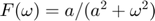
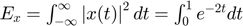
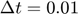
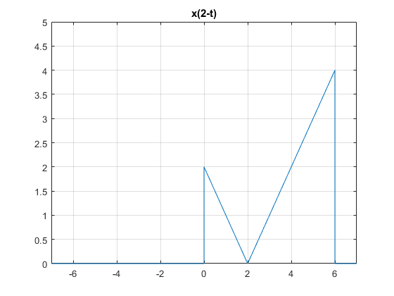
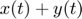

Practica 3: Señales Continuas
- Enriquez Melendez Jeus
- Rosas Palacios Alan
Contents
- Objetivos
- Introducción
- Desarrollo
- Problema 1
- Problema 2
- Problema 3
- Problema 4
- M1.1 Funciones anonimas
- M1.2 Operadores relacionales y la función de paso de unitario
- M1.3 Operaciones de visualización en la variable independiente
- M1.4 Integración numérica y estimación de energía de señal
- Problema 5
- Problema 1.2.2
- Problema 6
- Problema 1.1.3
- Problema 7
- Problema 1.1.4
- Referencias
Objetivos
- Manipulación básica de MATLAB
- Gráficas de señales reales y complejas continuas
- Transformación de señales continuas (escalamientos y traslaciones)
- Calculo de energia y potencia de señales continuas
Introducción
MATLAB (Matrix Laboratory, “laboratorios de matrices”) creado en 1984 por Mathworks. Es un software matemático con entorno de desarrollo integrado (IDE) que tiene un lenguaje de programación propio (Lenguaje M) y es multiplataforma (Unix, Windows y Apple Mac Os X).
La primera versión surge de la idea de Clave Moler de usar paquetes de subrutinas escritas en Fortran en los cursos de Análisis Numérico y Algebra Lineal, sin tener una necesidad de programas que usaran este lenguaje. Posteriormente en 1970 se crea el lenguaje de programación M proporcionando un acceso sencillo al software de matrices LINPACK y EISPACK sin tener que hacer uso del Lenguaje Fortran.
El uso de MATLAB se ha vuelto indispensable en el día a día de ingenieros, matemáticos, físicos, empresas, estudiantes, entre otros. Sin embargo, este software tiene un costo elevado para algunos por lo cual existen alternativas de software libre entre las cuales se encuentra Octave y Python con los cuales podremos realizar acciones iguales a las que proporciona MATLAB.
- GNU OCTAVE:
GNU Octave puede ser la alternativa más conocida a MATLAB. En desarrollo activo durante casi tres décadas, Octave se ejecuta en Windows, Mac y Linux, y está empaquetado para la mayoría de las distribuciones principales. Si está buscando un proyecto que sea lo más parecido posible al lenguaje MATLAB real, Octave puede ser una buena opción para usted; se esfuerza por una compatibilidad exacta, por lo que muchos de sus proyectos desarrollados para MATLAB pueden ejecutarse en Octave sin necesidad de modificaciones.
A continuación se adjunta un enlace donde encontrar información acerca de GNU Octave enlace
- Python
Anaconda: Alternativa a Canopy con instaladores para Windows, MacOS y Linux. Si bien es menos completo que Canopy, Anaconda tiene las librerías de Python más importantes. También tiene opciones comerciales para acelerar código pero la ventaja de Anaconda es que puedes usar Python 3 (versión más reciente y recomendable si estás empezando). En resumen, para instalar Python en Windows Anaconda es la mejor opción.
Python(x,y) y/o WinPython: Alternativa totalmente libre y gratuita orientada especialmente para ingenieros que quieren migrar de MATLAB a Python. De las anteriores es la que menos paquetes o librerías dispone pero es la forma más sencilla de empezar. Amabas son sólo para Windows siendo WinPython la opción más interesante puesto que no requiere instalación (portable) y la puedes llevar en tu memoria USB.
Canopy: Conocida anteriormente como Enthought, dispone de instaladores para Windows, MAC y Linux totalmente automáticos. Además incluye la mayoría de librerías y un sistema para añadir o actualizar los paquetes de Python de forma automática. A día de hoy no dispone de Python 3 por lo que recomendamos Anaconda (primera opción) que, a diferencia de Canopy, permite su uso en empresa de forma gratuita.
A continuación se adjunta un enlace donde encontrar información acerca de Python enlace
Desarrollo
Problema 1
La función fun1 recibe dos parametros , y regresa la evaluación .
Esta función trabaja con y .
function [F] = fun1 (a,w) w=length(w); F=a/((a^2).*(w.^2)); end
Problema 2
Función que gráfica funciones de . Ejemplo, la gráfica de vs en el intervalo ![$[-2,2]$](SySPrac3RosasPalaciosAlan_eq01169792831847459841.png) para .
para .
function []= Mifigure() w = -2:0.01:2; a=1; figure plot(w,a./((a^2).*(w.^2))) end
Obteniendo como resultado al llamarla
Mifigure()

Problema 3
No se realiza
Problema 4
M1.1 Funciones anonimas
Una manera simple de usar funciones en MATLAB es utilizando funciones anonimas. Una función anónima es una función que se almacena en un archivo de programa, pero está asociada a una variable cuyo tipo de datos es notfunction_handle Las funciones anónimas pueden aceptar entradas y salidas de retorno, tal como lo hacen las funciones estándar. Sin embargo, solo pueden contener una sola instrucción ejecutable.
f= @(t) exp(-t).*cos(2*pi*t);
Una vez definida, puede ser evaluada simplemente pasandole un valor de entrada interesante. Por ejemplo,
t=0; f(t)
ans =
1
Evaluando en , se espera confirmar el resultado esperado. El mismo resultado es obtenido pasando directamente.
f(0)
ans =
1
Las entradas vectoriales permiten la evaluación de múltiples valores simultáneamente. Considere la tarea de graficar durante el intervalo . El comportamiento bruto de la función es claro: debe oscilar cuatro veces con una envoltura en descomposición. Dado que los bocetos precisos a mano son engorrosos, las graficas generadas por MATLAB son una alternativa atractiva. Como lo ilustra el siguiente ejemplo, se debe tener cuidado para garantizar resultados confiables.
Supongamos que el vector se elige para incluir solo los enteros contenidos en , que lo mismo que .
t=(-2:2);
Esta entrada vectorial se evalúa para formar una salida vectorial.
f(t)
ans =
7.3891 2.7183 1.0000 0.3679 0.1353
El comando plot representa gráficamente el resultado, que se muestra en la Fig. M1.1.
plot(t,f(t)); xlabel('t'); ylabel('f(t)'); grid; title('Figura M1.1: f(t)=e^{-t}cos(2 \pi t) para t = (-2:2)');
La cuadricula es añadida por el comando grid. Desafortunadamente, plot no ilustra el comportamiento oscilatorio esperado. Se requieren más puntos para representar adecuadamente .
La siguiente pregunta es, ¿cuantos puntos son suficientes? Si pocos puntos son elegidos, la informacion se pierde, graficando 20 a 200 puntos por oscilacion es normalmente adecuado. Para representar este caso, es elegida para dar 100 puntos por oscilacion.
t=(-2:0.01:2);
Nuevamente la funcion es evaluada y graficada. Resultando lo mosrado en la figura M1.2.
plot (t,f(t)); xlabel('t'); ylabel('f(t)'); grid; title('Figura M1.2: f(t)=e^{-t}cos(2 \pi t) para t = (-2:0.01:2)');
M1.2 Operadores relacionales y la función de paso de unitario
La funcion de paso de unitario surge naturalmente en muchas situaciones prácticas. Por ejemplo, un paso unitario puede modelar el acto de encender un sistema. Con la ayuda de operadores relacionales, los objetos en línea pueden representar la función de paso unitario. En MATLAB, Un operador relacional compara dos elementos. Si la comparación es verdadera, se devuelve un verdadero lógico (1). Si la comparación es falsa, se devuelve un falso lógico (0). Algunas veces llamadas funciones indicadoras, los operadores relacionales indican si una condición es verdadera. Seis operadores relacionales están disponibles: <, >, <=, >=, ==, y ~=. La función de paso unitario se define fácilmente utilizando el operador relacional >=.
u =@(t) t>=0;
Cualquier función con una discontinuidad de salto, como el paso de la unidad, es difícil de trazar. Considere trazar usando .
t = (-2:2);
Dos problemas significativos son evidentes en la gráfica resultante, que se muestra en la figura M1.3. Primero, MATLAB escala automáticamente los ejes de la trama para unir estrechamente los datos. En este caso, esta característica normalmente deseable oscurece la mayor parte de la trama. En segundo lugar, MATLAB conecta los datos de la trama con líneas, lo que dificulta la verdadera discontinuidad del salto. La resolución aproximada del vector t enfatiza el efecto al mostrar una línea inclinada errónea entre y .
plot (t,u(t)); xlabel('t'); ylabel('u(t)'); title('Figura M1.3: u(t) para t = (-2:2)');
El primer problema se corrige ampliando verticalmente el cuadro delimitador con el comando axis. El segundo problema se reduce, pero no se elimina, al agregar puntos al vector .
t = (-2:0.01:2);
El argumento del vector de cuatro elementos del eje (axis) especifica el eje x mínimo, el eje x máximo, el eje y mínimo y el eje y máximo, respectivamente. Los resultados mejorados se muestran en la Fig. M1.4.
plot (t,u(t)); xlabel('t'); ylabel('u(t)'); axis ([-2 2 -0.1 1.1]); title('Figura M1.4: u(t) para t = (-2:0.01:2) con modificación de ejes');
Los operadores relacionales se pueden combinar usando AND lógico, OR lógico y negación lógica: &, |, y ~, respectivamente. Por ejemplo (t>0) & (t<1) y ~((t<=0) | (t>=1)) ambos correctos si . Para demostrar, considere definir y graficar la unidad de pulso , como se muestra en la figura M1.5:
p =@(t) t>=0 & t<1; t = (-1:0.01:2); plot(t,p(t)); xlabel('t'); ylabel('p(t) = u(t)-u(t-1)'); axis ([-1 2 -.1 1.1]); title('Figura M1.5: p(t)=u(t)-u(t-1) sobre (-1<=t<=2)');
Para operandos escalares, MATLAB también admite dos construcciones lógicas de cortocircuito. Se realiza un AND lógico de cortocircuito utilizando &&, y se realiza un OR lógico de cortocircuito utilizando | | Los operadores lógicos de cortocircuito suelen ser más eficientes que los operadores lógicos tradicionales porque prueban la segunda parte de la expresión solo cuando es necesario. Es decir, cuando la expresión escalar A se encuentra falsa en (A y B), la expresión escalar B no se evalúa, ya que un resultado falso ya está garantizado. De manera similar, la expresión escalar B no se evalúa cuando la expresión escalar A se encuentra verdadera en (A | | B), ya que un resultado verdadero ya está garantizado.
M1.3 Operaciones de visualización en la variable independiente
Se encuentran comúnmente dos operaciones en la variable independiente de una función: desplazamiento y escalado. Los objetos en línea son adecuados para investigar ambas operaciones.
Comsiderando Una versión realizable de . Desafortunadamente, MATLAB no puede multiplicar objetos en línea. Es decir, MATLAB informa un error para g = f*u cuando f y u son objetos en línea. Más bien, necesita ser definida explícitamente.
g = @(t) exp(-t).*cos(2*pi*t).*(t>=0);
Una operación combinada de desplazamiento y escalado está representada por , donde a y b son constantes reales arbitrarias. Como ejemplo, considere trazar sobre . Con a = 2, la función se comprime por un factor de 2, lo que resulta en el doble de las oscilaciones por unidad t. Agregando la condición b > 0, la forma de onda se desplaza hacia la izquierda. Dada la función en línea g, es casi trivial obtener una gráfica precisa.
t = (-2:0.01:2);
La Figura M1.6 confirma la compresión de forma de onda esperada y el desplazamiento a la izquierda. Como verificación final, tenga en cuenta que la función g (·) se activa cuando el argumento de entrada es cero. Por lo tanto, debería activarse cuando o en  , un hecho confirmado nuevamente por la figura M1.6.
, un hecho confirmado nuevamente por la figura M1.6.
plot(t,g(2*t+1)); xlabel('t'); ylabel('g(2t+1)'); title('Figura M1.6: g(2t+1) sobre (-2<=t<=2)'); grid;
Luego, considere trazar sobre . Como a <0, la forma de onda se reflejará. Afregando la condición b>0, la forma de onda final se desplaza hacia la derecha.
La figura M1.7 confirma tanto la reflexión como el desplazamiento a la derecha.
plot(t,g(-t+1)); xlabel('t'); ylabel('g(-t+1)'); title('Figura M1.7: g(-t+1) sobre (-2<=t<=2)'); grid;
Hasta este punto, las Figs. M1.6 y M1.7 se pueden dibujar razonablemente a mano. Considere trazar la función más complicada sobre (Fig. M1.8). En este caso, un boceto a mano preciso es bastante difícil. Con MATLAB, el trabajo es mucho menos pesado.
plot(t,g(2*t+1) +g(-t+1)); xlabel('t'); ylabel('h(t)'); title('Figura M1.8: h(t)=g(2t + 1)+g(-t + 1) sobre (-2<=t<=2)'); grid;
M1.4 Integración numérica y estimación de energía de señal
Las señales interesantes a menudo tienen representaciones matemáticas no triviales. Calcular la energía de la señal, que implica integrar el cuadrado de estas expresiones, puede ser una tarea desalentadora. Afortunadamente, muchas integrales difíciles pueden estimarse con precisión mediante técnicas de integración numérica. Incluso si la integración parece simple, la integración numérica proporciona una buena manera de verificar los resultados analíticos.
Para empezar, consideramos la señal simple . La energia de la señal  Rendimientos integradores . La integral de energía también se puede evaluar numéricamente. La figura 1.27 ayuda a ilustrar el método simple de aproximación rectangular: evalúe el integrando en puntos separados uniformemente por ?t, multiplique cada uno por ?t para calcular las áreas rectangulares y luego sume todos los rectángulos. Primero, creamos la función .
x = @(t)exp(-t).*((t>=0)&(t<1));
Dejando , se crea un vector de tiempo adecuado.
t = (0:0.01:1);
El resultado final se calcula utilizando el comando sum.
E_x =sum(x(t).*x(t)*0.01)
E_x =
0.4367
El resultado no es perfecto, pero con un 1% de error relativo está cerca. Al reducir , se mejora la aproximación. Por ejemplo, produce E_x = 0.4328, o 0.1% de error relativo.
Aunque es simple de visualizar, la aproximación rectangular no es la mejor técnica de integración numérica. La función MATLAB quad implementa una mejor técnica de integración numérica llamada cuadratura de Simpson adaptativa recursiva. Para operar, quad requiere una función que describa el integrando, el límite inferior de integración y el límite superior de integración. Tenga en cuenta que no es necesario especificar .
Para usar quad para estimar Ex, primero se debe describir el integrando.
x_squared = @(t) exp(-2*t).*((t>=0)&(t>1));
Estimando Ex sigue inmediatamente.
E_x = integral(x_squared,0,100)
E_x =
0.0677
En este caso, el error relativo es -0.0026%.
Se pueden usar las mismas técnicas para estimar la energía de señales más complejas. Considere , definido previamente. La energía se expresa como . Existe una solución de forma cerrada, pero requiere un poco de esfuerzo. MATLAB proporciona una respuesta más rápidamente.
g_squared = @(t) exp(-2*t).*(cos(2*pi*t).^2).*(t>=0);
Aunque el límite superior de integración es infinito, la envoltura que se desintegra exponencialmente asegura que g (t) sea efectivamente cero mucho antes de t = 100. Por lo tanto, se usa un límite superior de t = 100 junto con .
t = (0:0.001:100); E_g = sum(g_squared(t)*0.001)
E_g =
0.2567
Se obtiene una aproximación ligeramente mejor con la función quad.
E_g = integral(g_squared, 0,100)
E_g =
0.2562
Problema 5
Problema 1.2.2
Para la señal x(t) ilustrada en Fig. P1.2-2
x = @(t) (-t.*((t>=-4) & (t<0))+t.*((t>=0) & (t<2))); t=-7:0.0001:7; plot(t,x(t)) grid on axis([-7 7 0 5]) title('Fig. P1.2-2 señal x(t)')

Bosqueje
a. x(t-4)
plot(t,x(t-4)) grid on axis([-7 7 0 5]) title('x(t-4)')
b. x(t/1.5)
plot(t,x(t/1.5)) grid on axis([-7 7 0 5]) title('x(t/1.5)')
c. x(-t)
plot(t,x(-t)) grid on axis([-7 7 0 5]) title('x(-t)')
d. x(2t-4)
plot(t,x(2*t-4)) grid on axis([-7 7 0 5]) title('x(2t-4)')
e. x(2-t)
plot(t,x(2-t)) grid on axis([-7 7 0 5]) title('x(2-t)')
Problema 6
Problema 1.1.3
a. Encuentre la energía del par de señales y en a y b. Bosqueje y encuentre la energía de las señales  y . ¿Puede hacer una observacion a partir de estos resultados?
graficasProblema6 ()
Funcion de calculo de la Energia
function [] = energia (E) Ef= @(t)E(t).^2; integral(Ef, 0,100) end
Funcion a. x(t)
x1 = @(t) 1.*((t>=0) & (t<2)); energia(x1);
ans =
2.0000
Funcion a. y(t)
y1=@(t) (1.*((t>=0) & (t<1)))+(-1.*((t>=1) & (t<2))); energia(y1);
ans =
2.0000
Funcion b. x(t)
x2=@(t) sin(t).*((t>=0) & (t<2*pi)); energia(x2);
ans =
3.1416
Funcion b. y(t)
y2 = @(t) 1.*((t>=0) & (t<2*pi)); energia(y2);
ans =
6.2832
Funcion c. x(t)
x3=@(t) sin(t).*((t>=0) & (t<pi)); energia(x3);
ans =
1.5708
Funcion c. y(t)
y3 = @(t) 1.*((t>=0) & (t<pi)); energia(y3);
ans =
3.1416
Ahora con las sumas
graficasProblema6_2 ()

Suma x(t)+y(t) funciones inciso a
E1=@(t) x1(t)+y1(t); energia(E1);
ans =
4.0000
Resta x(t)-y(t) funciones inciso a
E2=@(t) x1(t)-y1(t); energia(E2);
ans =
4.0000
Suma x(t)+y(t) funciones inciso b
E3=@(t) x2(t)+y2(t); energia(E3);
ans =
9.4248
Resta x(t)-y(t) funciones inciso b
E4=@(t) x2(t)-y2(t); energia(E4);
ans =
9.4248
Suma x(t)+y(t) funciones inciso c
E5=@(t) x3(t)+y3(t); energia(E5);
ans =
8.7124
Resta x(t)-y(t) funciones inciso c
E6=@(t) x3(t)-y3(t); energia(E6);
ans =
0.7124
Observaciones
Observamos que al momento de sumar o restar los pares de señales de (a) y (b) el resultado de la energia es el mismo respectivamente.
b. Repita la parte(a) para el par de señales ilustradas en c. ¿Su observacion en la parte (a) sigue siendo valida?
En cuanto a el inciso c no sucede asi puesto que el resultado es diferente, por lo tanto no se mantiene a: Esto pasa debido a que en almenos una de las señales de los pares anteriores estaba definida de tal forma que tuviera simetria, por ende cuando se restaban las señales al ser una unitaria y la otra simetrica el resultado de la señal era el mismo, pero en c no porque ninguna de las señales podria decirse que es simetrica respecto al eje x.
Problema 7
Problema 1.1.4
Encuentre la potencia de la señal periodica mostrada en la siguiente figura. Encuentre tambien los valores rms de los valores:
graficaProblema7()
Funcion de calculo de la Potencia
function [Pf] = potencia (E,T) Ef=@(t)E(t).^2; Pf=(1/T).*(integral(Ef,0,T)); end
p1 =@(t)((t.^3).*((t>=-2) & (t<=2))); p2=@(t)p1(mod(t,4))+p1(mod(t,-4));
Potencia de la señal x(t)
potencia(p2,4)
rms =
3.0237
ans =
9.1429
a.
p3=@(t)-p2(t); potencia(p3,4)
rms =
3.0237
ans =
9.1429
b.
p4=@(t)2.*p2(t); potencia(p4,4)
rms =
6.0474
ans =
36.5714
Referencias
https://es.mathworks.com/help/symbolic/heaviside.html
https://es.mathworks.com/help/matlab/matlab_prog/anonymous-functions.html
Libro Lathi Linear systems and signals
https://es.mathworks.com/help/signal/examples/signal-generation-and-visualization.html